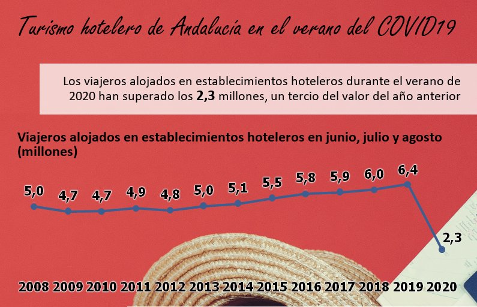

Recurrir a las gráficas para expresar de una forma visual, amable y rápida cómo cambian o se comportan multitud de procesos, está a la orden del día en una sociedad tan fascinada por la imagen como es la nuestra.
Basta realizar una rápida mirada al siguiente gráfico correspondiente al Instituto de Estadística y Cartografía de Andalucía, para comprobar los efectos del COVID-19 en el sector hotelero.

Una mirada más profesional y preparada, es capaz de descubrir una dolencia cardíaca al contemplar la gráfica que se dibuja cuando nos hacen un electrocardiograma.
Presentar de forma gráfica los cambios que se producen entre dos variables que están relacionadas, es una de las formas más atractivas de expresar las relaciones funcionales. Y, como acabamos de ver, el lenguaje gráfico de las funciones es versátil, actual y adaptable a multitud de situaciones.